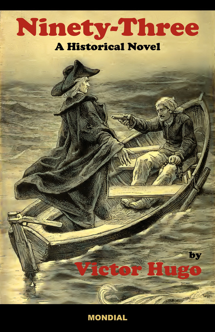
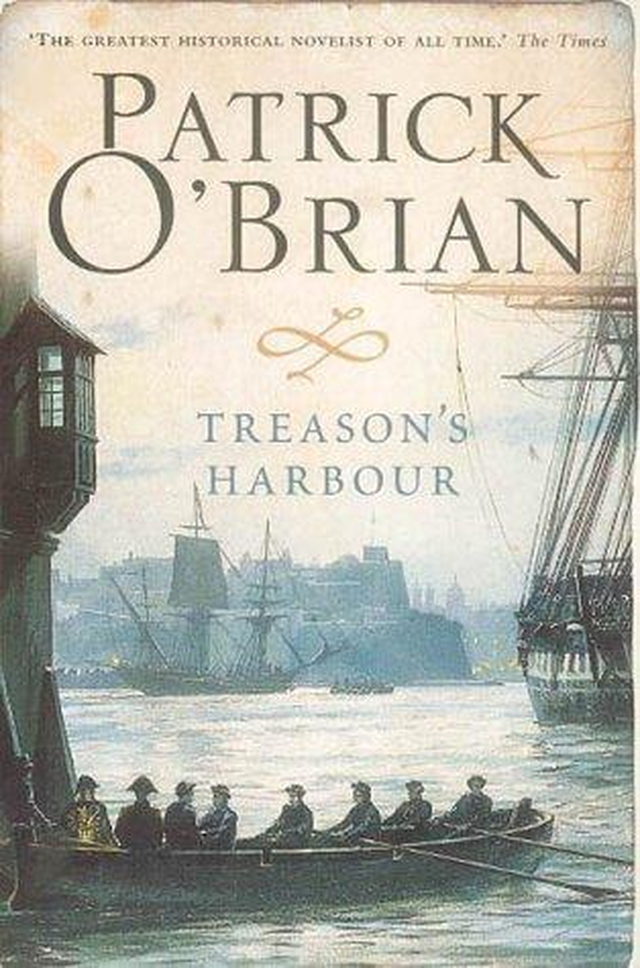
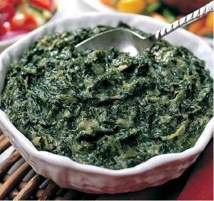
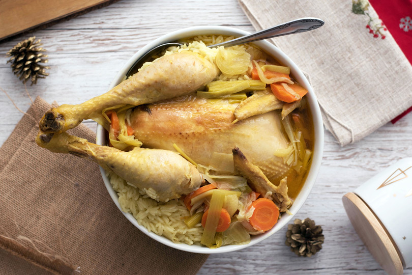
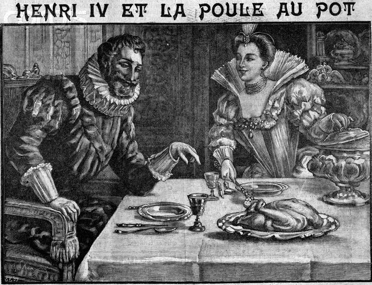
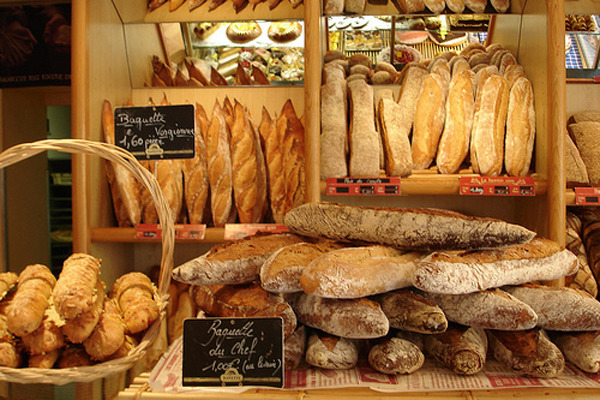
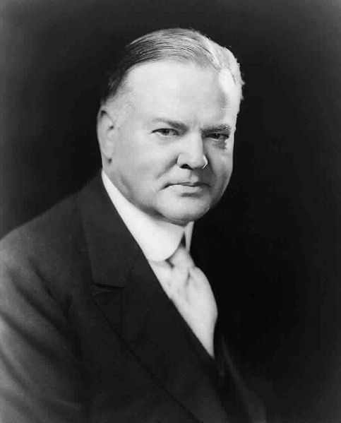
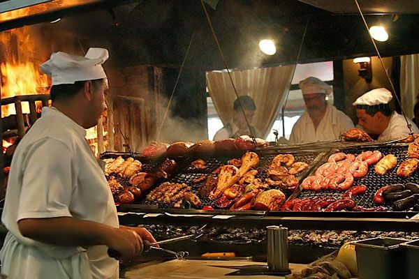

유럽인들은 언제부터 고기를 배불리 먹었나 - Poule au pot 이야기
게시: 2018-11-15T06:30:00+09:00
'문학과현실'사에서 출간된 빅토르 위고의 "브르타뉴의 세 아이들"이라는 소설은 솔직히 그렇게 재미있지는 않았습니다. 이 소설 속에는 주인공들이 마라나 당통, 콘월리스나 윌리엄 피트와 같은 실존 인물과 함께 등장하기 때문에, 제가 읽을 때 누가 실존 인물이었고 누가 가공의 인물인지가 약간 헷갈렸습니다. 그래서 위키를 뒤져 보았으나, 대체 이 소설에 대해서는 찾을 수가 없더군요. 한참 후에야, 이 소설의 원제가 '1793' 이라는 것을 알았습니다. 이 소설은 빅토르 위고가 마지막으로 쓴 작품으로서, 제목이 암시하듯이 프랑스 대혁명에 반발하며 일어났던 방데(Vandee) 지방의 내란을 다룬 것입니다.
줄거리는 아직 읽지 않으신 분들을 위해 밝히지 않겠습니다. 다만 몇가지 인상적인 대목들이 있더군요. 아마 '~주의자'라는 사람들은 무척 경멸할, 빅토르 위고다운 '싸구려 인간미'가 진하게 풍겨나오는 구절들입니다.

(쪽배 위에서 권총으로 위협당하고 있는 사람이 랑트나크 후작입니다. 소설 속에서 묘사된 것보다는 좀... 가볍게 그려졌군요.)
----------------------------------------------------------------------------
(방데 지방에 내란을 일으키러 영국으로부터 잠입한 랑트나크 후작은, 프랑스에 몰래 상륙하자마자 이미 자신의 행방이 알려져있고 자신의 목에 6만 프랑의 현상금이 걸려 있다는 포고문을 보고 놀랍니다. 그가 농부로 변장을 하고 숲 속으로 숨어들 때 왠 거지를 만나는데, 이 거지는 대뜸 랑트나크 후작을 알아보고 자신의 집에 숨으라고 권합니다.)
"그럼 자네가 글을 읽을 줄 안다니 나를 넘겨주면 6만 프랑(요즘 가치로 약 7억원)을 받게 된다는 것도 알 텐데."
"예, 압니다. 금화로 말이지요."
"6만 프랑이면 큰 재산인 것도 모를리 없겠지 ?"
"그럼요."
"누구든지 나를 넘겨주기만 하면 벼락부자가 되는 것이 아닌가."
"저도 그런 생각을 안 해본 건 아니지요. 당신을 보았을 때, 속으로 이런 생각을 했던 겁니다. 이 사람을 넘겨주는 자는 누구나 6만 프랑을 얻어 한 재산 톡톡히 장만할 거라구. 그러니 서둘러 숨겨 주어야겠다고 마음먹었지요."
----------------------------------------------------------------------------
(파리 혁명정부에서 정치위원으로 내려온 시무르댕은 전직 신부로서, 젊은 시절 귀족인 고뱅 가문의 가정교사로서 어린 고뱅을 아들처럼 키운 사람입니다. 이제 청년이 된 고뱅 자작은 혁명정부의 대령이 되어 자신의 할아버지인 랑트나크 후작을 토벌하는 부대의 유능한 지휘관이 되었습니다. 하지만 냉혹한 성격인 시무르댕은 고뱅이 관용/온건파인 것을 보고 크게 우려합니다.)
"왜 자네는 성 마르크 르 블랑 수도원의 수녀들을 석방시켰는가 ?"
"저는 여자들을 상대로 전쟁하진 않습니다."
"왜 자네는 루비네에서 잡은 광신적인 그 늙은 신부들을 혁명 재판소에 파송시키지 않았는가 ?"
"저는 늙은이들을 상대로 전쟁하고 있는 게 아닙니다."
"사소한 동정은 하지 말게. 시역자들이 바로 해방자야. 저 탕플 탑을 지켜보란 말이야."
"탕플 탑, 저라면 거기서 태자(처형당한 루이 16세의 아들)를 풀어 주겠습니다. 저는 어린애들을 상대로 전쟁하고 싶지는 않습니다."
"적이 루이 카페라면 어린애들과도 싸워야 하는 거다."
"선생님, 저는 정치가는 아닙니다."
"코세 초소의 공격에서 반역자 장 트르통이 궁지에 몰려 허둥지둥 혼자 군도를 휘두르며 자네 부대에 달려 들었을 때, 자네는 왜 '대열을 풀어 통과시켜라!'하고 외쳤는가 ?"
"한 사람을 죽이는 데 1천5백명이 필요하진 않기 때문이죠."
"라 카유트리 다스티예에서 부상당해 기어가던 조제프 베지에라는 방데군을 부하 병사가 죽이려 할 때 '전진하라! 그는 내가 처리하겠다'고 하고선 권총을 공중에다 대고 쏜 일이 있었다. 그건 왜 그랬지 ?"
"쓰러진 사람을 죽이지 않는 법이니까요."
"그 둘은 지금 부대장이 되어 있다. 그 두 놈을 살려 줌으로써 자네는 공화국에 두 적을 제공한 셈이야."
"물론 저는 공화국에 친구를 만들어 주려고 했지, 적을 만들어 주려고 하지는 않았습니다."
(시무르댕은 프랑스를 환자에, 방데를 종기에 비유하며, 외과의사가 종기를 용서하지 않고 잘라내듯 방데를 냉혹하게 진압해야 한다고 주장합니다.)
"혁명은 이제 전 세계를 절단하고 있다. 그래서 93년은 유혈의 해란 말일세."
"외과의사는 침착한데, 제가 보는 혁명가들은 난폭해요."
----------------------------------------------------------------------------
이 소설의 주인공이라고 할 수 있는 젊은 고뱅 자작은 소설 후반부에서 프랑스 농민들의 식생활 이야기도 합니다. 프랑스 농민들은 고기를 1년에 나흘 정도 밖에 고기를 먹지 못한다고요. 하긴 당시 서민들이 빵이 없어 굶는다는 이야기가 있자, 당시 왕비 앙투와네트가 "빵이 없으면 과자를 먹으면 될 것 아닌가" ("S’ils n’ont plus de pain, qu’ils mangent de la brioche") 라고 했다지요 ? 앙투와네트도 빵이 없으면 고기를 먹으라는 이야기는 하지 않았으니, 최소한 그 여자도 농가에는 고기가 없다는 것을 알고 있었던 모양입니다. (물론 앙투와네트는 실제로는 pain이니 brioche니 하는 말은 하지 않았다고 합니다.)
고기는 빵보다 비쌀 수 밖에 없는 물건입니다. 같은 면적의 땅에서 목초를 키우고 그것으로 소나 양을 치는 것에 비해, 밀이나 쌀을 재배하여 그것으로 빵을 만드는 것이 훨씬 '많이' 만들 수 있으니까요.
흔히 우리나라 사람들이 밥을 먹을 때, 서양인들은 빵을 먹는다고 하지요. 그런데 서양인들이 식사를 하는 광경을 보면, 주식이 빵이라기보다는 고기라는 사실을 쉽게 알게 됩니다. 마치 우리나라에서 고기집에 가서 고기를 잔뜩 몇인분씩 구워 먹고 난 뒤 '식사'로 된장찌게에 공기밥을 먹는 것처럼, (비록 순서는 바뀌었지만) 주식인 고기를 먹기 전에 가볍게 롤빵 1~2개 정도를 먹는 것을 보실 수 있습니다.

Treason's Harbour by Patrick O'Biran (배경 : 1813년 지중해 몰타 섬) -----------------------------
하지만 화요일, 수요일, 그리고 목요일에는 '그리갈레(gregale)'라고 불리는 지중해의 북서풍이 몹시 심하게 불어 어선이 출항을 하지 못한데다, 장교 식당의 설리(Searle)는 카톨릭 신자인 장교를 접대해 본 적이 없는지라 (당시 영국 해군에서는 모든 위관급 장교는 임관시 교황의 권위를 부정하는 의식을 거치게 되어 있었으므로, 카톨릭 신자인 장교는 사실상 없었습니다:역주), 소금에 절인 생선을 아무 것도 준비해놓지 않았었다. 덕분에 머투어린은 영국식으로 요리된, 물기가 가득하고 맛대가리 없으며 무척 꺼림직해보이는 채소 요리로 식사를 때워야 했다.
-----------------------------------------------------------------------------------------------------------------

(이것이 바로 영미식 시금치 요리입니다. 시금치를 버터와 함께 물에 넣고 푸욱 삶으면 이렇게 회색 빛이 감도는 꺼림직한 물건으로 변합니다. 저는 카투사로 군대에 갔다가 미군 식당에서 이 물건을 보고 기절하는 줄 알았습니다.)
위 소설 구절 속에서도, 빵은 주식이라기보다는, 식사의 작은 일부로서, 빵 바구니에 담겨져 있었습니다.
대체 유럽인들은 언제부터 이렇게 고기를 많이 먹게 되었을까요 ?
원래부터 유럽인들은 고기를 주식으로 한다고들 하지만, 이는 사실이 아닙니다. 실은 유럽인들이 제대로 된 빵을 주식으로 한 것도 그다지 오래 된 것이 아닙니다. 고대 그리스인들은 밀과 보리로 만든 마자(maza)라는 납작한 떡을 주식으로 만들어 먹었습니다. 효모를 넣어 부풀린 흰빵은 명절 때나 먹었다고 하네요. 중세 유럽의 농민들도 빵을 양껏 먹지는 못했고, 이런저런 찌꺼기를 넣어 끓인 수프 또는 죽을 주식으로 삼았습니다. 그러다가 농업 혁명이 진행되면서 밀과 호밀, 보리 생산량이 늘어나면서 비로소 제대로 구운 빵을 먹게 되었지요.
이렇게 가난한 유럽에서도, 물론 귀족들은 잘 먹고 잘 살았습니다. 귀족의 음식은 정말 고기가 주식으로서, 중세 연대기를 보면 프랑스 왕실에서는 하루에 600마리의 어린 닭, 200마리의 비둘기, 50마리의 거위 새끼를 먹었다고 합니다. (몇 명이서 먹은 것인지 궁금합니다...) 이들이 어찌나 고기를 좋아했는지는 종교적 관행도 바꿀 정도였습니다. 즉, 원래 카톨릭에서는 위 소설에 인용된 것처럼, 금요일에는 고기(원칙적으로는 달걀도 포함되었다고 하네요)를 먹지 못하게 되어 있었고, 대신 생선을 먹어야 했었는데, 대부분의 귀족들은 그냥 벌금을 내고 고기를 먹었다고 합니다. 사실 알고 보면 중세에는 도로 교통 사정 때문에 내륙 지방에서는 생선 가격이 무척 비쌌으므로, 무척 경제적인 선택이었을 것 같습니다. 이때 귀족들은 두껍고 넓적한 빵을 접시 대신으로 썼는데, 이렇게 고기 국물이 스며든 빵 접시는 대개 먹지 않고 내버렸습니다. 이 고기 국물이 묻은 빵 접시는 매일 밤 성문 밖에 모여든 가난한 농부들에게 하사품으로 나누어줬다고 합니다. (그렇다면 당시 온 나라의 거지들은 모두 귀족의 궁성 앞에 모여 살았을 것 같은데요, 그로 인해 발생하는 문제는 어떻게 해결했을까요 ?)

(프랑스인들은 자기 나라의 상징을 삶아먹는답니다 !!! 앙리 4세와 얽힌 요리, Poule au pot, 그러니까 닭 냄비 요리 chicken in pot 입니다. 마치 우리 삼계탕 비슷한 음식처럼 보이는군요.)
아무튼 그러니까 유럽인들이라고 아주 옛날부터 당연히 고기를 먹고 살았던 것은 아닙니다. 닭이 프랑스의 상징이 된 것과 상관있는 이야기가 하나 있습니다. (고대 골 족의 상징이 수탉이었다는 설도 있긴 합니다.) 1589년 프랑스 종교 내란을 일단락 하고 프랑스 왕위에 오른 앙리 4세는, 대관식에서 이렇게 맹세를 했다고 합니다. "신께서 제게 천수를 누리게 해주신다면, 일요일마다 프랑스의 모든 농부들의 냄비에 닭이 들어있을 수 있도록 노력하겠다." 그러니까 그 시절에도 일반 농민들에게는, 소나 돼지는 고사하고 닭조차도 매일은 커녕 1주일에 1번 먹는 것이 어려운 귀한 음식이었다는 것이지요. 불행히도 앙리 4세는 57세의 나이에 광신도에게 암살되었습니다만, 사실 앙리 4세가 80까지 살았다고 해도 프랑스가 모든 농민이 1주일에 1번씩 닭을 먹을 수 있을 정도로 번영하지는 못했을 것 같습니다. 아무래도 당시에는 농업 생산력이 딸릴 수 밖에 없었거든요. 아무튼 신구교 양측의 화합을 위해 애썼던 앙리 4세는 프랑스 역사상 매우 존경받는 왕이 되었고, 그 왕의 이루어지지 않은 약속, 즉 '일요일의 닭'은 프랑스의 국가 이념 비슷한 것이 되어 닭이 프랑스의 상징이 되었다고 합니다. (김일성이 '고기국에 이밥 먹여주겠다'라고 한 대국민 약속은 현대의 우리나라에서는 상당히 비웃음거리가 되는데, 프랑스의 국가 이념이 그렇다고 하니 국민의 복지를 최우선으로 하는 인본주의가 아주 간지가 넘쳐 보입니다...)

(앙리 4세에게 Poule au Pot를 권하고 있는 저 여자는 Gabrielle d'Estrées 라는 귀부인으로서, 앙리 4세가 프랑스 왕이 되기 전부터 그의 정부였던 여자인데, 앙리 4세의 아이를 낳다가 죽는 바람에 앙리 4세에게 큰 슬픔을 안겨 주었다고 합니다.)
앙리 4세가 죽은지 200년이 훨씬 지나 19세기에 접어든 이후에도, 유럽인들은 여전히 고기에 굶주려 있었습니다. 당시 영국 해군 수병들은 매주 쇠고기 4파운드(1.8kg)와 돼지고기 2파운드(0.9kg)를 배급받았다고 했지요. 이 고기들이 소금에 절여진 한 1년 정도 된 물건이라는 점만 빼면, 이 정도의 육류 배급은 정말 대단한 양이 아닐 수 없습니다. 저도 먹는데 그리 돈을 아끼는 편이 아니지만, 그 정도로는 못 먹습니다. 하지만 이런 식생활이 당시 유럽 서민층의 일반적 식사라고 생각하시면 곤란합니다. 수병들이나 군인들은 직업 특성상 엄청 많이 먹어야 했거든요. 사실 저 정도의 양은 지나치게 많은 것이라서, 직업이 군의관인 저 소설 속 주인공 머투어린도 여러차례 수병들의 건강을 위해 고기 및 주류 배급량을 줄여야 한다고 언급하곤 했습니다.
같은 시기, 일반 농민들의 식생활은 영국 해군에 비하면 동물성 식품이 무척 귀했습니다. 고기는, 예나 지금이나 아무래도 채소나 곡물보다는 비싼 것이었으니까요. 전에 번역해서 올렸던 글 중 일부를 다시 발췌해보겠습니다.
Sharpe's Revenge by Bernard Cornwell (배경 : 1814년 프랑스) -----------
하지만 이날 밤, 루실은 불안한 듯한 미소를 지어보이며 샤프가 잘 먹기를 바란다고 말했다. 식탁 위에는 포도주, 빵, 치즈와 작은 햄조각이 있었는데, 프레데릭슨 대위는 햄을 조심스레 샤프의 접시 위에 올려놓았다.
샤프는 프레데릭슨의 접시를 보고, 이어서 루실의 접시를 보았다. "자네 햄은 어디 있지, 윌리엄 ?"
"카스티노 부인(루실)은 햄을 좋아하지 않으신답니다." 프레데릭슨은 치즈를 잘랐다.
"하지만 자넨 좋아하쟎아 ? 난 자네가 햄을 빼앗으려고 살인하는 것도 봤는데."
"영양분을 필요로 하는 건 소령님이쟎습니까." 프레데릭슨은 고집을 부렸다. "제가 아니고요."
샤프는 눈살을 찌푸렸다. "이 집에는 돈이 부족한 모양이지 ?" 그는 카스티노 부인이 영어를 못한다는 것을 알고 있었으므로, 그녀 앞에서 이런 이야기를 꺼리지 않고 했다.
"찢어지게 가난합니다, 소령님. 물론 땅은 많은데, 요즘은 그게 도움이 안되나 봅니다. 게다가 앙리의 약혼식에 가진 돈을 거의 다 써버렸나봐요."
"망할." 샤프는 햄을 우스꽝스럽도록 작은 세조각으로 잘랐다. 왼팔을 아직 제대로 쓸 수가 없어서 그의 동작은 매우 서툴렀다. 그는 햄을 세 접시 위에 공평하게 나누었다.
------------------------------------------------------------------------------------
나폴레옹 시대가 지난, 19세기 중반 일반적인 유럽 농민의 식사도 그다지 큰 개선은 없었습니다. 그래도 밀가루로 만든 빵에 버터를 발라 먹을 정도면 유럽에서 평균 이상은 가는 것이었습니다. 같은 시기, 아일랜드에서는 감자에 버터를 발라 먹었으니까요. 아일랜드도 목축이 성행했기 때문에 그나마 버터라도 발라 먹을 수 있었던 것이지요. 그럼 버터와 우유는 있는데, 그 쇠고기는 어디 갔냐고요 ? 가난한 아일랜드인들은 버터와 우유 정도만 먹을 수 있었고, 소는 영국인 지주에게 소작료를 내기 위해 영국에 수출해야 했지요.
19세기 후반인, 보불 전쟁 때 이야기를 보시지요.
포로들 (모파상 작, 배경 : 1870년 프랑스) -----------------------------------------------
(프랑스 시골 숲 속, 중년 부인이 사는 어느 외딴 집에 6명의 프로이센 정찰병들이 침입합니다.)
그녀는 솥에 물을 좀더 붓고, 버터와 감자를 넣었다. 그러고 난 뒤, 벽난로 안쪽 구석자리의 갈고리에 걸어둔 베이컨 한 덩어리를 꺼내어 두 조각을 내어, 그 중 반을 솥에 집어 넣었다.
6명의 병사들은 그녀의 움직임을 굶주린 눈빛으로 감시하고 있었다. 그들은 소총과 헬멧을 한쪽 구석에 모아두고, 마치 학생들이 교실에서 말을 잘 듣듯이 얌전히 저녁을 기다렸다.
---------------------------------------------------------------------------------------
그래도 저녁 식사라고 베이컨이 좀 나오는 것에 불과합니다. 프랑스에서는 수프는 모조리 하류 음식 취급을 한다는데, 이유는 수프라는 물건은 태생 자체가 적은 재료로 여럿이 나눠 먹기 위해 만든 요리라는 것이지요. 이 소설 속에서도 실제로 그런 목적으로 수프를 만드는 것이고요.
결국 유럽인들이 육류 위주의 식생활을 굳힌 것은 제국주의가 한창이던 19세기 말엽이 되어서야 가능했습니다. 지금부터 불과 150년 전만 하더라도 대부분의 유럽인 서민들에게 고기는 매우 귀한 음식이었던 것이지요. 이렇게 써놓고 보니까 식민지 수탈의 결과로 유럽인들이 잘 먹고 잘 산다고 푸념하는 것처럼 되어 버렸습니다만, 그렇다고 영국이 인도의 소를 잡아오거나 이집트의 닭을 빼앗아 온 것은 아니었지요. 확실히 식민지 수탈이 유럽 경제 발전의 기초가 된 것 같기는 합니다만, 거기에 대해서는 이론이 많으므로 일단 패스하겠습니다.
아무튼 결국 유럽인의 주식은 고기가 되었고, 반만년간 쌀을 주식으로 하던 우리나라도 (사실 쌀을 주식으로 한 건 몇백 년 안되었지요... 유럽인들이 빵을 주식으로 한 지 몇백 년 안된 것처럼이요) 최근 30여년 정도의 폭발적인 경제 성장 덕택에 육류를 많이 먹게 되었습니다. 대신 쌀 소비가 줄어서 큰 일이지요. 우리나라의 쌀 소비 저하 문제가 심각한 것처럼 유럽에도 밀 소비 저하 문제가 심각하지 않을까요 ?

(한국의 쌀밥 뿐만 아니라, 프랑스의 바게뜨도 위기랍니다)
심각하답니다. 프랑스에서 1인당 하루 빵 소비량은 1880년에는 600 그램이었지만, 1950년에는 300 그램으로 줄었고, 1977년에는 180 그램으로 다시 줄었습니다. 지금 시점에서는 어떤지 알아볼 엄두가 안나는군요. 다만, 우리나라는 그 과정이 불과 20~30년 사이에 급속도로 진행된 반면, 유럽은 거의 100년에 걸쳐 일어났기 때문에 유럽의 농가들은 그에 대해 적응할 기간이 길었다는 점이 다를 뿐이지요. 이미 우리나라 농촌도 쌀보다는 돼지 사육과 채소 농사가 더 큰 매출을 올리고 있는데 특히 돼지 사육은 환경 오염이 심하기 때문에 문제를 일으키고 있다는 기사를 최근에 어디서인가 본 것 같습니다.
그나저나 이렇게 되면서 프랑스에서는 빵이 전멸하는 것이 아닐까요 ? 그렇지는 않을 것 같습니다. 우리나라 어르신들께서, 무조건 쌀밥을 먹어야 밥을 먹은 것으로 쳐주시는 것처럼 (가령 피자 3조각이나 먹고 왔다고 설명드리면 그럼 밥은 아직 안먹었네 하시면서 밥상을 차려주시는 분들이 아직 많지요), 프랑스에도 비슷한 정서가 있나 봅니다. 프랑스 사람들에게 왜 식사 때 빵을 먹냐고 물어보면, 많은 사람들이 '그냥 먹어야 할 것 같아서'라고 대답을 한다는군요. 아마 우리나라에서도 쌀밥은 사라지지 않을 것 같습니다.

(이 험상궂은 아저씨가 허버트 후버입니다.)
여담으로, '모든 냄비에 닭을' (Chicken in Every Pot) 이라는 캣치 프레이즈는 1932년 미국 대통령 선거에서 당시 현직 대통령이자 공화당의 연임 후보이던 허버트 후버(Herbert Hoover)가 썼던 선거 구호였다고 합니다. 이 문구는 스코틀랜드 작가인 알렉산더 스미스 (Alexander Smith)가 1863년에 쓴 책에서 가장 뛰어난 사람이 세계를 다스린다면 무지와 전쟁이 사라지고 세금이 가벼워지며, '프랑스인들 뿐만 아니라, 전 세계인들의 냄비에 닭이 담겨 있을 것'이라고 쓴 것에서 따왔다고 합니다. 하지만 그 유래가 무엇이었건간에, 당시 경제 대공황에 시달리던 미국인들은 정말 먹고 살게 해줄 대안으로 민주당의 후보인 프랭클린 루스벨트를 택했다고 합니다.
결국 고기는 비싼 것이고, 동양이나 서양이나 고기를 먹을 수 있다는 것은 부유함을 뜻하는 것입니다. 그렇다면 세계에서 가장 부유한 덴마크나 룩셈부르크, 스위스 같은 곳에서 고기를 가장 많이 먹을까요 ? 물론 그렇지는 않습니다. 우리나라보다 훨씬 부유한 일본이 우리보다 고기를 많이 먹는 것도 아니고, 또 우리보다 1인당 GDP가 훨씬 떨어지는 중국이 우리보다는 고기를 훨씬 많이 먹습니다. 명목당 GDP와 구매력 기준의 GDP가 다른 것도 원인이겠습니다만, 아무래도 식생활이라는 것에는 경제적 배경만 작용하는 것이 아니라, 수천년간 이어온 문화적 배경이라는 것이 무시될 수는 없는 것이라서 그렇지요.

(이렇게 쇠고기를 마음껏 먹을 수 있는 행복한 나라는 과연 어디일까요 ? 정답은 몬테비데오를 수도로 하는 나라입니다.)
참고로 전세계에서 가장 많은 양의 쇠고기를 소비하는 나라는, 우루과이라고 합니다. 1인당 1년 소비량이 무려 60kg입니다. 근수로 따지면 무려 100근 ! 대략 1주일에 2근씩 먹어치우는데요 ! 참고로 개돼지처럼 먹어대는 미국도 1인당 1년에 43kg, 사람보다 소와 양이 훨씬 많다는 오스트레일리아도 39kg, 브라질도 36kg 정도입니다. 우루과이 바로 옆나라인 아르헨티나도 1인당 1년 소비량이 55kg 정도라고 하니, 솔직히 부럽습니다 !!!